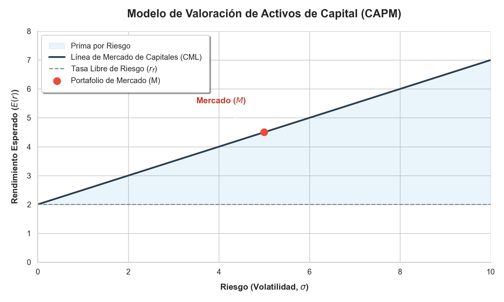
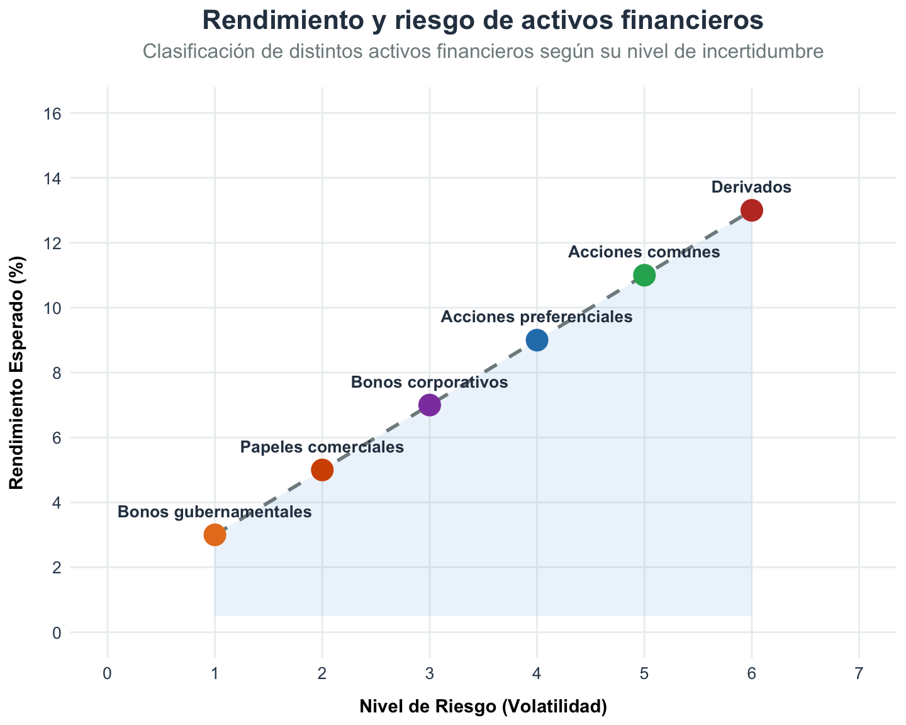
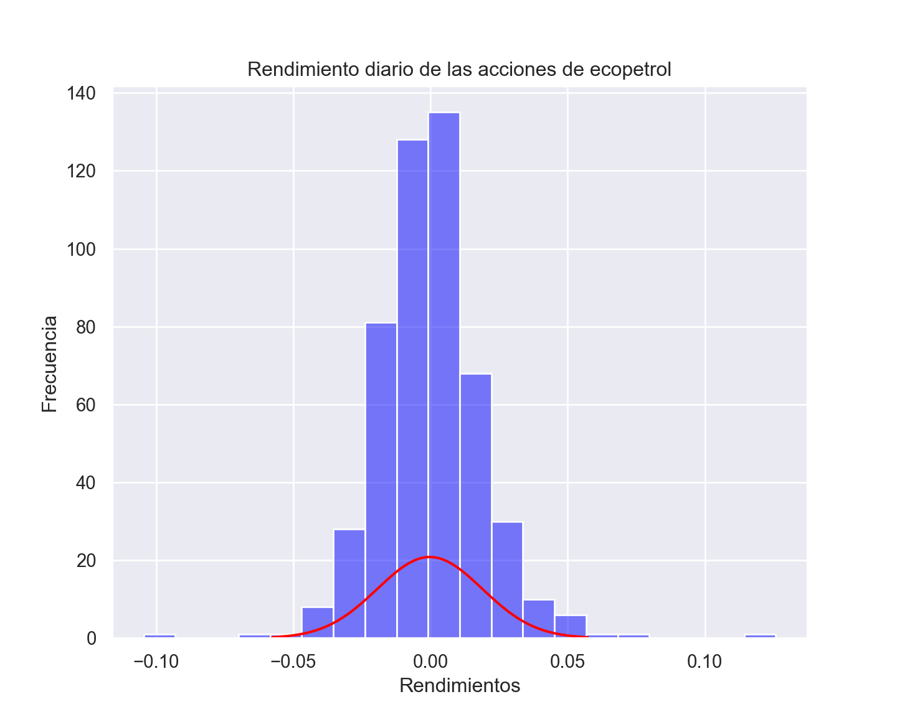
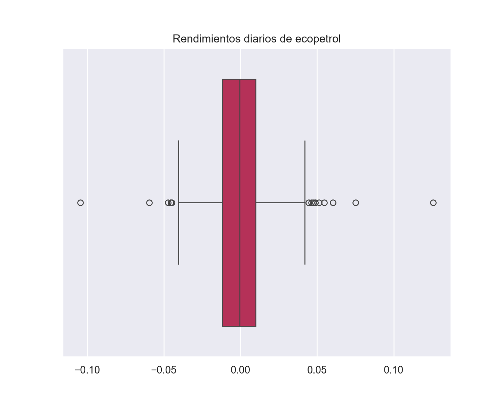
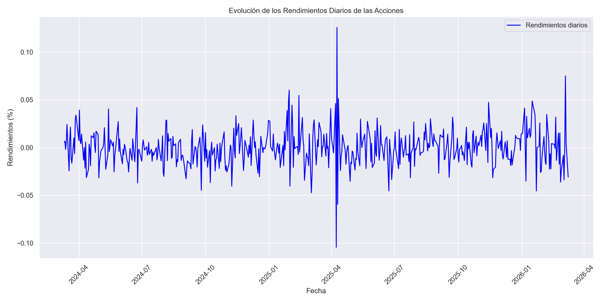
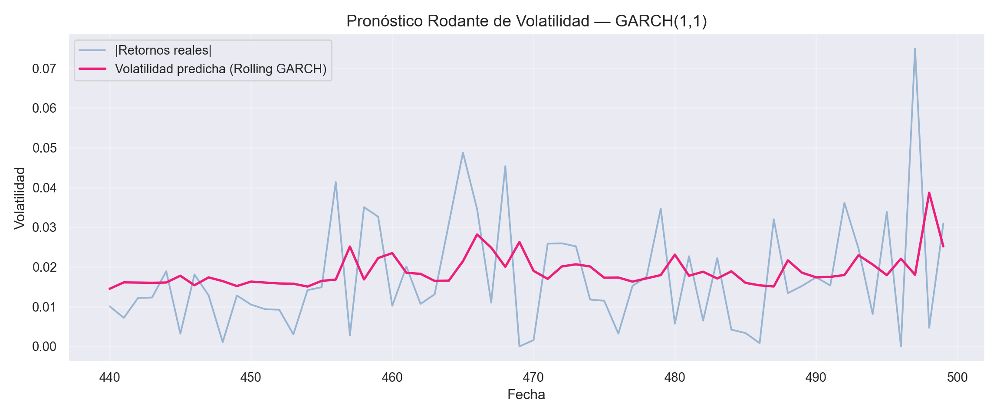

El rendimiento en el contexto financiero se refiere a la ganancia o pérdida generada por una inversión a lo largo del tiempo. Es una medida fundamental para evaluar la eficacia de una inversión y es esencial tanto para inversionistas individuales como institucionales. El rendimiento puede expresarse en términos absolutos o relativos y se puede ajustar al riesgo para proporcionar una comparación más precisa entre diferentes inversiones.
El siguiente texto es tomado de forma literal del texto guía
El rendimiento de un activo financiero se define como el cambio de valor que se tiene en un periodo con respecto a otro, generalmente el periodo anterior.
\[ r_i = \frac{\text{Valor final} - \text{Valor inicial}}{\text{Valor inicial}} \]
O de otra forma, el rendimiento de un activo financiero \(i\) se puede definir como:
\[ r_i = \frac{P_t - P_{t-1}}{P_{t-1}} \]
Donde:
\(P_t\) es el precio del activo en el periodo \(t\).
\(P_{t-1}\) es el precio del activo en el periodo \(t-1\).
Ahora bien, si se considera que el activo financiero es una acción que paga un dividendo \(D_t\) en el periodo \(t\), el rendimiento puede definirse como:
\[ r_i = \frac{P_t - P_{t-1} + D_t}{P_{t-1}} \]
El rendimiento de los activos financieros se suele definir también como:
\[ \displaystyle{r_i = \ln \left( \frac{P_t}{P_{t-1}} \right) }\]
También conocido como log-rendimiento. Algunas de las razones para definir el rendimiento de esta manera son:
- Su interpretación es equivalente al rendimiento compuesto continuamente.
- Las series de los rendimientos son estacionarias, es decir, su media y su varianza son constantes a lo largo del tiempo.
Tipos de Rendimiento
Rendimiento Absoluto: Se refiere a la ganancia o pérdida total generada por una inversión, sin tener en cuenta el período de tiempo durante el cual se ha mantenido la inversión. Se calcula como la diferencia entre el valor final de la inversión y su valor inicial.
Rendimiento Relativo: Compara el rendimiento de una inversión con el de un punto de referencia o índice de mercado. Permite evaluar cómo se desempeña una inversión en comparación con el mercado en general o con inversiones similares.
Rendimiento Ajustado al Riesgo: Este enfoque ajusta el rendimiento de una inversión por el nivel de riesgo asumido para generar ese rendimiento. Herramientas como el Ratio de Sharpe y el Ratio de Sortino son ejemplos comunes que permiten comparar inversiones que pueden tener diferentes niveles de volatilidad o riesgo.
Cálculo del Rendimiento
El rendimiento se puede calcular de varias maneras, dependiendo del tipo de inversión y la información disponible. Dos métodos comunes son:
Rendimiento porcentual: Se calcula como la diferencia entre el valor final y el valor inicial de la inversión, dividida por el valor inicial, todo esto multiplicado por 100 para obtener un porcentaje.
Tasa de Retorno Anual Compuesto (CAGR, por sus siglas en inglés): Es útil para evaluar el rendimiento de una inversión a lo largo de múltiples periodos. Se calcula utilizando la fórmula de interés compuesto para suavizar el rendimiento anualizado a lo largo del período de la inversión.
Importancia del Rendimiento
Permite a los inversores:
- Evaluar la eficiencia de diferentes inversiones o estrategias de inversión.
- Comparar el desempeño de sus inversiones con el de índices de mercado o benchmarks.
- Ajustar sus carteras según sus objetivos de inversión y tolerancia al riesgo.
Además, entender el rendimiento y cómo se calcula ayuda a los inversores a establecer expectativas realistas sobre las ganancias potenciales de sus inversiones y a gestionar mejor el riesgo asociado.
Rendimiento esperado de una inversión
El rendimiento esperado de una inversión es una medida del beneficio o ganancia que se espera obtener de una inversión en el futuro. Se basa en las probabilidades de varios resultados posibles, considerando tanto los rendimientos positivos como los negativos. Es una herramienta esencial en la teoría de carteras y en la toma de decisiones financieras, ya que permite a los inversores estimar el valor de una inversión teniendo en cuenta sus posibles rendimientos y los riesgos asociados.
Cálculo del Rendimiento Esperado
Para un activo individual, el rendimiento esperado se puede calcular usando la siguiente fórmula:
\[ E(R) = \sum P_i \cdot R_i \]
Donde:
\(E(R)\) es el rendimiento esperado del activo.
\(P_i\) es la probabilidad de cada retorno \(i\).
\(R_i\) es el retorno esperado para cada estado \(i\).
Esta fórmula implica sumar los productos de las probabilidades de diferentes resultados posibles y los respectivos rendimientos. Es una manera de ponderar cada posible retorno por su probabilidad de ocurrencia.
Ejemplo
Supongamos que un activo tiene tres posibles rendimientos en el próximo año: 10%, 6%, y -4% (pérdida). Si las probabilidades de estos rendimientos son 20%, 50%, y 30% respectivamente, el rendimiento esperado se calcula así:
\[ E(R) = (0.2 \times 10\%) + (0.5 \times 6\%) + (0.3 \times (-4\%)) \]
Vamos a calcularlo para ver el resultado.
El rendimiento esperado del activo, basado en los cálculos, es del 3.8%. Esto significa que, dadas las probabilidades y los rendimientos posibles, se espera en promedio un retorno del 3.8% para el próximo año.
Aplicaciones del Rendimiento Esperado
Seleccionar Activos: Comparar el rendimiento esperado de diferentes inversiones puede ayudar a seleccionar aquellos activos que se alinean mejor con los objetivos de inversión y la tolerancia al riesgo del inversor.
Diversificación de Cartera: Al entender el rendimiento esperado de distintos activos, los inversores pueden construir una cartera diversificada que optimice el equilibrio entre riesgo y retorno.
Planificación Financiera: El rendimiento esperado también es crucial para la planificación financiera a largo plazo, incluyendo la jubilación y la acumulación de patrimonio.
Nota
El rendimiento esperado es solo una estimación basada en probabilidades. Los mercados financieros son inherentemente inciertos, y los eventos futuros pueden divergir significativamente de las expectativas. Además, el cálculo del rendimiento esperado se basa en la precisión de las probabilidades asignadas a los diferentes resultados, que pueden no ser fáciles de estimar con certeza.
Expectativa de rendimiento total de un inversor \[ E(r) = r_f + E(r_s) \]
Rendimiento Libre de Riesgo (\(r_f\)): Es la tasa de retorno que se espera de una inversión considerada sin riesgo. Esto significa que es el rendimiento que un inversor espera recibir de una inversión segura, sin preocuparse por la pérdida del principal. A menudo, se utiliza el rendimiento de los bonos del gobierno a corto plazo como proxy para el rendimiento libre de riesgo, ya que se asume que el gobierno no incumplirá sus obligaciones.
Prima por Riesgo (\(E(r_s)\)): Es el exceso de rendimiento que un inversor espera recibir por asumir un mayor riesgo. La prima por riesgo compensa a los inversores por el riesgo adicional de invertir en activos más riesgosos en comparación con los activos libres de riesgo.
La fórmula completa sería:
\[ E(r) = r_f + E(r_s) \]
Esta ecuación es un principio básico del modelo de valoración de activos de capital (CAPM), que es un modelo utilizado para determinar el rendimiento esperado de una inversión en función de su riesgo no diversificable, o riesgo de mercado. En el contexto del CAPM, la prima por riesgo a menudo se calcula como el producto del beta del activo (que mide la sensibilidad del rendimiento del activo a los movimientos del mercado) y la prima de riesgo del mercado (que es la diferencia entre el rendimiento esperado del mercado y el rendimiento libre de riesgo).

La gráfica representa la relación entre el rendimiento esperado de una inversión y el nivel de riesgo asociado, según la Teoría de Precios de Activos de Capital (CAPM “Capital Asset Pricing Model” por sus siglas en inglés). Esta teoría es un modelo que describe la relación entre el riesgo sistemático y el rendimiento esperado de los activos, especialmente las acciones.
La línea recta en la gráfica es conocida como la Línea de Mercado de Capitales (CML por sus siglas en inglés). Veamos los componentes de la gráfica:
Eje Y (Rendimiento): Representa el rendimiento esperado de una inversión. La altura en el eje vertical indica el nivel de rendimiento. Cuanto más alto es el punto en el eje Y, mayor es el rendimiento esperado.
Eje X (Riesgo): Representa el nivel de riesgo de una inversión. Este riesgo se mide comúnmente por la desviación estándar de los rendimientos pasados, que es una medida de la volatilidad. Cuanto más a la derecha se encuentra el punto en el eje X, mayor es el riesgo asociado.
Tasa Libre de Riesgo: Es el punto en el eje Y donde el eje X es cero. Representa el rendimiento que se espera de una inversión sin riesgo, como los bonos del gobierno a corto plazo. Es el rendimiento mínimo que los inversores esperarían, ya que no hay riesgo involucrado.
Rendimiento Con Riesgo: Es el punto en la gráfica donde se proyecta un nivel de riesgo específico (en el eje X) para obtener el rendimiento esperado correspondiente (en el eje Y). Este rendimiento es superior a la tasa libre de riesgo debido al riesgo adicional asumido.

Los diferentes tipos de activos financieros se trazan en el gráfico según su perfil de riesgo y rendimiento:
Bonos gubernamentales: Generalmente tienen un bajo riesgo y un bajo rendimiento esperado. Se consideran inversiones seguras porque están respaldadas por el gobierno, pero por lo general no ofrecen rendimientos tan altos.
Papeles comerciales: Son instrumentos de deuda a corto plazo emitidos por empresas y suelen tener un poco más de riesgo y un rendimiento esperado ligeramente mayor que los bonos gubernamentales.
Bonos corporativos: Emitidos por empresas, tienen un riesgo mayor que los papeles comerciales y los bonos gubernamentales, ya que dependen de la salud financiera de la corporación emisora. Como tal, ofrecen un rendimiento esperado más alto para compensar el riesgo adicional.
Acciones preferenciales: Son una forma de capital que tiene prioridad sobre las acciones comunes en términos de pagos de dividendos. A menudo, tienen menos riesgo que las acciones comunes pero más que los bonos corporativos, y su rendimiento esperado está en algún lugar intermedio.
Acciones comunes: Representan una participación de propiedad en una empresa y pueden ofrecer altos rendimientos si la empresa lo hace bien, pero también vienen con un riesgo significativo, incluida la posibilidad de perder toda la inversión si la empresa falla.
Derivados: Son instrumentos financieros cuyo valor se deriva de otros activos subyacentes. Pueden ser muy complejos y conllevan un riesgo alto, pero también ofrecen la posibilidad de altos rendimientos. Incluyen opciones, futuros y swaps, entre otros.
Ejemplo: Rendimiento de las acciones de ecopetrol
Movimiento de las acciones desde el día de hoy a dos años atras
Descriptivos y pruebas
## Jarque-Bera test:## Estadístico: 678.3299## p-valor: 0.0000## Kolmogorov-Smirnov:## Estadístico: 0.0558## p-valor: 0.0842

Propiedades empíricas de los rendimientos financieros
Las propiedades empíricas de los rendimientos financieros, también conocidas como “estilizadas”, son observaciones regulares en series temporales de rendimientos de activos financieros que se mantienen a través de diferentes mercados y periodos de tiempo. Las más destacadas incluyen:
No normalidad de los rendimientos: A menudo, los rendimientos no siguen una distribución normal. Esto se refleja en la presencia de colas pesadas (mayor probabilidad de observar eventos extremos de lo que predice la distribución normal) y asimetría (los rendimientos pueden inclinarse hacia la derecha o la izquierda en lugar de ser simétricos).
Agrupamiento de volatilidad (Volatility clustering): Los rendimientos tienden a exhibir periodos de alta volatilidad seguidos por periodos de baja volatilidad. Este fenómeno indica que los rendimientos grandes (ya sean positivos o negativos) tienden a ser seguidos por rendimientos grandes de cualquier signo, y rendimientos pequeños tienden a seguir a rendimientos pequeños.
Efecto de apalancamiento (Leverage effect): Se ha observado que, en muchos casos, la volatilidad de los rendimientos financieros tiende a aumentar cuando los precios bajan, lo que sugiere una correlación negativa entre rendimientos y volatilidad. Este efecto se llama así porque un descenso en los precios de los activos aumenta el apalancamiento financiero si el endeudamiento es constante.
Ausencia de autocorrelaciones significativas en rendimientos: Los rendimientos diarios o semanales de los activos financieros suelen mostrar una autocorrelación cercana a cero, lo que indica que los mercados son bastante eficientes, al menos en formas débiles, lo que significa que es difícil predecir los rendimientos futuros basándose únicamente en la información pasada de los rendimientos.
Autocorrelación en magnitudes de rendimientos: Aunque los rendimientos pueden no estar autocorrelacionados, las magnitudes de los rendimientos (por ejemplo, la volatilidad) sí lo están. Esto es consistente con el agrupamiento de volatilidad mencionado anteriormente.
Efecto día de la semana: Se ha documentado que los rendimientos pueden variar según el día de la semana, con lunes (efecto lunes) a menudo mostrando rendimientos promedio más bajos en comparación con otros días.
Efecto de enero: Históricamente, en muchos mercados, los rendimientos en enero han sido más altos en promedio que en otros meses, un patrón particularmente pronunciado en acciones de pequeña capitalización.

Volatilidad
La volatilidad es una medida estadística que representa la magnitud de las fluctuaciones en el precio de un activo financiero (como acciones, bonos, commodities, etc.) o de un mercado en su conjunto, durante un periodo de tiempo determinado. Es un indicador clave de la incertidumbre o el riesgo asociado a la inversión en ese activo o mercado. La volatilidad se utiliza frecuentemente para cuantificar el riesgo de una inversión y es un componente esencial en varios modelos y estrategias de gestión de riesgos financieros.
Cómo se mide la volatilidad
Desviación estándar:
La desviación estándar de los rendimientos de un activo es la medida más directa y común de volatilidad. Representa la dispersión promedio de los rendimientos respecto a su media. Una desviación estándar alta indica una mayor volatilidad, es decir, mayor incertidumbre en los rendimientos del activo.
Rango intercuartílico (IQR):
Aunque menos común para medir la volatilidad, el IQR, que es la diferencia entre el tercer cuartil (Q3) y el primer cuartil (Q1), puede ofrecer una idea de la dispersión de los rendimientos.
Volatilidad histórica:
La volatilidad histórica, también conocida como volatilidad estadística, es una medida que cuantifica la dispersión de los rendimientos de un activo financiero (como acciones, bonos, materias primas) o índice de mercado durante un período de tiempo pasado. Esta medida se basa en los rendimientos pasados y proporciona una idea de cuánto ha fluctuado el precio del activo en el pasado, lo cual es útil para estimar el riesgo asociado con la inversión en ese activo.
Cómo se calcula la volatilidad histórica
Selección del periodo de tiempo: El primer paso es definir el período sobre el cual se calculará la volatilidad, por ejemplo, diario, semanal, mensual, etc. El período seleccionado dependerá del análisis que se desee realizar.
Cálculo de rendimientos: Se calculan los rendimientos del activo para el período seleccionado. Los rendimientos pueden ser logarítmicos o simples. El rendimiento logarítmico se calcula como el logaritmo natural de la razón entre el precio de cierre del día actual y el precio de cierre del día anterior. El rendimiento simple es simplemente la variación porcentual entre estos precios.
Desviación estándar de los rendimientos: La volatilidad histórica se calcula como la desviación estándar de los rendimientos del activo para el período seleccionado. La desviación estándar es una medida estadística que indica la dispersión de un conjunto de datos respecto a su media. En este caso, muestra cuánto se desvían los rendimientos del activo de su media en el período considerado.
Fórmula para la desviación estándar (volatilidad)
La fórmula para calcular la desviación estándar (\(\sigma\)) de los rendimientos (\(R\)) y, por tanto, la volatilidad histórica es:
\[ \sigma = \left(\frac{1}{N-1} \sum_{i=1}^{N} (R_i - \bar{R})^2\right)^{1/2}\\ \text{Volatilidad} = \sigma\cdot \sqrt{T} \]
donde:
\(N\) es el número total de rendimientos en el período,
\(R_i\) es el rendimiento en el período \(i\),
\(\bar{R}\) es el rendimiento medio en el período.
\(T\) es la longitud en días del periodo de interes.
Interpretación de la volatilidad histórica
Mayor volatilidad: Indica que el precio del activo ha experimentado cambios significativos en el período analizado. Una alta volatilidad histórica sugiere un mayor riesgo, ya que el activo ha mostrado fluctuaciones de precio más pronunciadas, lo que puede continuar en el futuro.
Menor volatilidad: Significa que el precio del activo ha sido relativamente estable, con cambios de precio menos drásticos. Una baja volatilidad histórica sugiere un menor riesgo, indicando que el activo ha sido más predecible en términos de sus fluctuaciones de precio.
Ejemplo (Ecopetrol)
La volatilidad histórica anualizada de la acción considerada en esta base de datos es aproximadamente \(42.3\%\). Esto significa que, basado en los rendimientos diarios pasados, se estima que el precio de la acción tiene una desviación estándar de sus rendimientos de alrededor del 42.3% en un año. Este valor proporciona una medida de la incertidumbre o el riesgo asociado con la inversión en esta acción.
# Calcular la volatilidad histórica como la desviación típica de los rendimientos diarios.
# Multiplicar por sqrt(data.shape[0]) para anualizar la volatilidad
historical_volatility = data['Rendimientos'].std() * (data.shape[0] ** 0.5)
historical_volatility## np.float64(0.42193219938733995)En general, una volatilidad de 0.42 corresponde a un activo de riesgo relativamente alto. Aquí hay algunas posibles conclusiones que puedes extraer:
Alta incertidumbre: Con una volatilidad de 0.42, los rendimientos del activo son probablemente muy impredecibles, lo que dificulta pronosticar el rendimiento futuro.
Alto potencial de pérdidas: Una alta volatilidad significa que los rendimientos del activo pueden ser significativamente negativos, lo que puede llevar a pérdidas sustanciales si no se gestionan adecuadamente.
Alto potencial de ganancias: Por otro lado, una alta volatilidad también significa que los rendimientos del activo pueden ser significativamente positivos, lo que puede resultar en ganancias sustanciales si la inversión resulta exitosa.
Inversores aversos al riesgo pueden evitarlo: Los inversores que son adversos al riesgo o tienen una baja tolerancia a las pérdidas pueden evitar invertir en activos con alta volatilidad, como este.
La diversificación es clave: Para gestionar el riesgo asociado con un activo como este, es esencial diversificar tu cartera invirtiendo en otros activos con menor volatilidad o rendimientos no correlacionados.
Para poner este valor de volatilidad en perspectiva, aquí hay algunas pautas generales sobre los niveles de volatilidad:
Baja volatilidad: 0.05-0.15 (por ejemplo, bonos del gobierno, fondos del mercado monetario)
Volatilidad moderada: 0.15-0.30 (por ejemplo, acciones de gran capitalización, fondos de inversión en bienes raíces)
Alta volatilidad: 0.30-0.50 (por ejemplo, acciones de pequeña capitalización, mercados emergentes, materias primas)
Muy alta volatilidad: 0.50-1.00 (por ejemplo, criptomonedas, acciones de centavo, activos altamente apalancados)
Tenga en cuenta que…: Estas son pautas generales, y la interpretación de la volatilidad depende del activo específico, las condiciones del mercado y los objetivos de inversión.
Volatilidad implícita
La Volatilidad Implícita (IV, por Implied Volatility) es un concepto central en la valoración de opciones y en la gestión de riesgos financieros. Mientras que la volatilidad histórica mide las fluctuaciones pasadas del precio de un activo, la volatilidad implícita representa la expectativa del mercado sobre la volatilidad futura del activo subyacente. Esta expectativa se extrae directamente de los precios de las opciones observados en el mercado.
En términos formales, la volatilidad implícita es el valor de \(\sigma\) que, al ser introducido en un modelo de valoración de opciones (como el modelo Black-Scholes), produce un precio teórico que coincide exactamente con el precio de mercado observado de la opción. Captura así la incertidumbre percibida o el riesgo que los participantes del mercado atribuyen al activo.
Diferencia clave: La volatilidad histórica mira hacia atrás (basada en datos pasados), mientras que la volatilidad implícita mira hacia adelante (refleja las expectativas futuras del mercado).
¿Por qué es importante la Volatilidad Implícita?
La volatilidad implícita es una herramienta fundamental por varias razones:
Sentimiento del mercado: Una IV alta indica incertidumbre o expectativa de movimientos bruscos; una IV baja sugiere estabilidad y confianza en la dirección del mercado.
Valoración de opciones: Es un insumo esencial para la fijación de precios de derivados y para la gestión del riesgo. A mayor IV, más costosas serán las opciones (tanto calls como puts), ya que aumenta la probabilidad de que la opción termine “in the money”.
Perspectiva de volatilidad futura: A diferencia de la volatilidad histórica, la IV refleja las expectativas en tiempo real de los inversores y analistas, incorporando toda la información disponible en el mercado.
Factores que afectan la Volatilidad Implícita
La volatilidad implícita no es constante y varía en función de diversos factores del mercado:
Oferta y demanda de opciones: Cuando la demanda por opciones de un activo aumenta (por ejemplo, cuando muchos inversores buscan cobertura), los precios de las opciones suben y, con ellos, la IV. A la inversa, una baja demanda reduce las primas y la IV.
Valor temporal (time value / theta): El tiempo restante hasta el vencimiento influye directamente en la IV. Las opciones con mayor tiempo hasta su vencimiento generalmente presentan una IV más alta, ya que existe un mayor periodo durante el cual pueden ocurrir movimientos significativos en el precio del activo subyacente.
Eventos de mercado: Anuncios de resultados financieros (earnings), publicaciones de datos macroeconómicos (inflación, empleo, tasas de interés), decisiones de bancos centrales, y tensiones geopolíticas pueden provocar picos abruptos en la IV, al aumentar la incertidumbre sobre los movimientos futuros del activo.
Condiciones generales del mercado: La IV tiende a incrementarse en mercados bajistas (bearish), ya que la incertidumbre y el miedo crecen, y a disminuir en mercados alcistas (bullish), donde predomina la confianza y la estabilidad.
Cálculo de la Volatilidad Implícita
La volatilidad implícita no se puede observar directamente ni calcular con una fórmula cerrada. En cambio, se obtiene mediante métodos numéricos: se utiliza un modelo de valoración de opciones y se ajusta iterativamente el valor de \(\sigma\) hasta que el precio teórico coincida con el precio de mercado observado.
El modelo más utilizado para este propósito es el modelo Black-Scholes para opciones europeas.
El modelo Black-Scholes
La fórmula del modelo Black-Scholes para una opción de compra (call) europea es:
\[ C = S \cdot N(d_1) - K \cdot e^{-rT} \cdot N(d_2) \]
donde los parámetros observables son:
\(S\): Precio actual del activo subyacente (current stock price).
\(K\): Precio de ejercicio (strike price) de la opción.
\(T\): Tiempo hasta el vencimiento, expresado en años (time to maturity).
\(r\): Tasa de interés libre de riesgo anualizada (risk-free rate).
\(N(\cdot)\): Función de distribución acumulativa (CDF) de la distribución normal estándar.
Y los términos intermedios \(d_1\) y \(d_2\) son:
\[ d_1 = \frac{\ln\left(\frac{S}{K}\right) + \left(r + \frac{\sigma^2}{2}\right)T}{\sigma\sqrt{T}} \]
\[ d_2 = d_1 - \sigma\sqrt{T} \]
El parámetro \(\sigma\) (volatilidad del activo subyacente) es precisamente la incógnita que buscamos resolver para obtener la volatilidad implícita.
Nota clave: Dado que todos los demás parámetros (\(S\), \(K\), \(T\), \(r\)) pueden ser observados directamente en el mercado, \(\sigma\) es el único parámetro desconocido. El problema se reduce a encontrar numéricamente el valor de \(\sigma\) que iguala el precio teórico \(C\) con el precio de mercado \(C_{\text{market}}\) de la opción.
Resolución numérica con scipy
Dado que \(\sigma\) no tiene una fórmula directa despejada, se resuelve numéricamente. La estrategia consiste en:
- Definir una función objetivo: \(f(\sigma) = C_{BS}(\sigma) - C_{\text{market}}\)
- Encontrar la raíz \(\sigma^*\) tal que \(f(\sigma^*) = 0\)
Para esto, la biblioteca scipy de Python
proporciona métodos robustos de búsqueda de raíces. A
continuación se implementa el cálculo utilizando
root_scalar con el método de
Brent, que es un algoritmo confiable que combina
bisección, secante e interpolación cuadrática inversa:
from scipy.optimize import root_scalar
# === Paso 1: Definir la fórmula de Black-Scholes ===
def black_scholes_call(S, K, T, r, sigma):
"""Calcula el precio teórico de una opción call europea (Black-Scholes)."""
d1 = (log(S / K) + (r + 0.5 * sigma**2) * T) / (sigma * sqrt(T))
d2 = d1 - sigma * sqrt(T)
return S * norm.cdf(d1) - K * exp(-r * T) * norm.cdf(d2)
# === Paso 2: Definir la función de volatilidad implícita ===
def implied_volatility(C_market, S, K, T, r):
"""
Calcula la volatilidad implícita resolviendo numéricamente
la ecuación Black-Scholes para sigma.
"""
def objective(sigma):
return black_scholes_call(S, K, T, r, sigma) - C_market
# root_scalar busca sigma en el intervalo [0.01, 2.0]
result = root_scalar(objective, bracket=[0.01, 2.0], method='brentq')
if result.converged:
return result.root
else:
raise ValueError("El cálculo de la volatilidad implícita no convergió.")# === Ejemplo 1: Opción ATM (At The Money) a 1 año ===
S = 100 # Precio actual del activo
K = 100 # Precio de ejercicio (ATM)
T = 1 # Tiempo hasta el vencimiento: 1 año
r = 0.05 # Tasa de interés libre de riesgo: 5%
C_market = 10 # Precio de mercado de la opción call
vol_imp_1 = implied_volatility(C_market, S, K, T, r)
print(f'Ejemplo 1 (ATM, 1 año):')## Ejemplo 1 (ATM, 1 año):## Volatilidad implícita: 0.1880 (18.80%)## Precio BS verificación: 10.0000## Precio mercado: 10.0000# === Ejemplo 2: Opción OTM (Out of The Money) a 30 días ===
S2 = 100 # Precio actual del activo
K2 = 105 # Precio de ejercicio (OTM: K > S)
T2 = 30/365 # Tiempo hasta el vencimiento: 30 días (anualizado)
r2 = 0.02 # Tasa de interés libre de riesgo: 2%
C_market2 = 3.50 # Precio de mercado de la opción call
vol_imp_2 = implied_volatility(C_market2, S2, K2, T2, r2)
print(f'Ejemplo 2 (OTM, 30 días):')## Ejemplo 2 (OTM, 30 días):## Volatilidad implícita: 0.4773 (47.73%)## Interpretación: el mercado espera una volatilidad anualizada de ~47.7%## Precio BS verificación: 3.5000## Precio mercado: 3.5000Explicación del código
Paso 1 —
black_scholes_call: Implementa la
fórmula de Black-Scholes. Recibe los parámetros observables
(\(S\), \(K\), \(T\), \(r\)) y un valor candidato de
\(\sigma\), y devuelve el
precio teórico de la opción call.
Paso 2 —
implied_volatility: Define una función
objetivo que calcula la diferencia entre el
precio teórico y el precio de mercado. Luego,
root_scalar busca el valor de \(\sigma\) en el intervalo \([0.01, 2.0]\) donde esta
diferencia es cero, utilizando el método de Brent
(brentq). Si el algoritmo converge, retorna la
volatilidad implícita; de lo contrario, lanza un error.
Ejemplo 2 — Interpretación del resultado: Si la volatilidad implícita calculada es aproximadamente 0.4773, esto significa que el mercado espera que la volatilidad anualizada del activo sea de ~47.73%. Una IV tan elevada refleja una alta incertidumbre o expectativa de movimientos significativos en el precio del activo durante la vida de la opción.
Interpretación probabilística de la IV
Una forma intuitiva de interpretar la volatilidad implícita es mediante desviaciones estándar. Bajo el supuesto de distribución normal, la IV anualizada puede traducirse en rangos de precio esperados:
- Considere una acción cuyo precio actual es \(S = \$100\) y cuya IV es del 20%. La desviación estándar mensual aproximada sería:
\[ \sigma_{\text{mensual}} = IV \times \sqrt{\frac{1}{12}} = 0.20 \times 0.2887 \approx 0.0577 \quad (5.77\%) \]
Esto implica que, con un 68% de probabilidad (1 desviación estándar), el mercado espera que el precio de la acción se mantenga entre $94.23 y $105.77 durante el próximo mes.
Con un 95% de probabilidad (2 desviaciones estándar), el rango esperado se amplía a $88.46 – $111.54.
Esta interpretación es especialmente útil para evaluar rápidamente si una opción está “cara” o “barata” en relación con la magnitud del movimiento que el mercado anticipa.
Consideraciones prácticas
Es importante tener en cuenta que este es un cálculo basado en el modelo Black-Scholes estándar, que asume:
- La opción es europea (solo se ejerce al vencimiento).
- No hay pagos de dividendos durante la vida de la opción.
- La volatilidad es constante durante toda la vida de la opción.
- Los mercados son eficientes y no hay costos de transacción.
En la práctica, se utilizan extensiones del modelo (como el modelo de Black-Scholes-Merton para dividendos, o modelos de volatilidad local/estocástica) que relajan estas suposiciones.
Interpretación de la Volatilidad Implícita
Expectativa del mercado: La volatilidad implícita es una medida de las expectativas del mercado sobre la magnitud de los movimientos futuros del precio del activo subyacente. Una volatilidad implícita alta indica que el mercado espera que el activo sea más volátil en el futuro, lo cual puede ser el resultado de eventos anticipados como lanzamientos de productos, decisiones de política monetaria, o cualquier otro evento que pueda tener un impacto significativo en el precio del activo.
Precios de opciones: La volatilidad implícita influye directamente en los precios de las opciones. A mayor volatilidad implícita, mayor será el precio de las opciones, tanto de compra (call) como de venta (put). Esto se debe a que una mayor volatilidad aumenta la probabilidad de que la opción termine “in the money” (con ganancias).
“Sonrisa” de volatilidad (volatility smile): Al observar la volatilidad implícita para opciones con el mismo activo subyacente pero diferentes precios de ejercicio y vencimientos, a menudo se encuentra que no es constante. Este fenómeno se conoce como la “sonrisa” de volatilidad, donde las opciones “in the money” y “out of the money” tienden a tener una volatilidad implícita mayor que las opciones “at the money”. Esto refleja las expectativas asimétricas de los inversores sobre los movimientos futuros del activo.
Indicador de sentimiento: La volatilidad implícita también se interpreta como un indicador del sentimiento del mercado. Niveles elevados pueden indicar incertidumbre o miedo entre los inversores, mientras que niveles bajos pueden sugerir complacencia o confianza en la dirección del mercado.
Relación con índices de volatilidad: Índices como el VIX (CBOE Volatility Index) se construyen a partir de la volatilidad implícita de las opciones sobre el S&P 500, y son ampliamente conocidos como el “índice del miedo” del mercado.
Estrategias de trading basadas en la IV
La volatilidad implícita es un factor determinante en la selección de estrategias con opciones:
Comprar opciones cuando la IV es baja: Cuando la IV se encuentra en niveles históricamente bajos, las primas de las opciones son relativamente baratas. Si posteriormente la volatilidad aumenta, el valor de la opción se incrementa por el efecto de la expansión de la IV, beneficiando al comprador incluso si el precio del activo subyacente no se ha movido significativamente.
Vender opciones cuando la IV es alta: Cuando la IV está en niveles elevados (por ejemplo, antes de un anuncio de resultados), las primas de las opciones están infladas. Los vendedores de opciones pueden beneficiarse del fenómeno conocido como “volatility crush” (aplastamiento de volatilidad): una vez que el evento pasa y la incertidumbre se reduce, la IV cae rápidamente, erosionando el valor de la opción vendida y generando ganancias para el vendedor.
Reversión a la media: Históricamente, la IV tiende a revertir a su promedio de largo plazo. Los operadores experimentados monitorean los niveles históricos de IV de un activo para identificar oportunidades cuando la IV se encuentra significativamente por encima o por debajo de su media.
Limitaciones de la Volatilidad Implícita
A pesar de su amplia utilidad, la IV presenta limitaciones importantes que deben considerarse:
No predice la dirección del movimiento: La IV cuantifica la magnitud esperada de las fluctuaciones de precio, pero no indica si el activo subirá o bajará. Una IV alta simplemente significa que se esperan movimientos grandes, sin especificar el sentido.
Sensibilidad a factores no fundamentales: Los precios de las opciones (y por tanto la IV) pueden verse influenciados por desequilibrios temporales de oferta y demanda, comportamiento irracional, o flujos de cobertura institucional, lo que puede distorsionar la señal de la IV respecto a la incertidumbre real.
No incorpora análisis fundamental: La IV se basa exclusivamente en los precios de mercado de las opciones y no considera directamente los fundamentos del activo subyacente, como flujos de caja, valoración o perspectivas de crecimiento.
Riesgo de sobrestimación: Estudios empíricos sugieren que la IV tiende a sobreestimar la volatilidad futura realizada, ya que los inversores suelen pagar una prima adicional por protección (la llamada prima de riesgo de volatilidad).
Referencia complementaria: Para una introducción adicional al concepto de volatilidad implícita, puede consultarse: Investopedia — Implied Volatility.
Volatilidad mediante suavizamiento exponencial
El suavizamiento exponencial es una técnica utilizada en la gestión de la volatilidad en el análisis de series temporales, especialmente relevante en el campo de las finanzas para modelar y predecir la volatilidad de los precios de los activos. Esta técnica se basa en la idea de que los datos más recientes son más relevantes para hacer predicciones que los datos más antiguos, pero sin ignorar completamente estos últimos. Así, se asigna un mayor peso a las observaciones más recientes, con los pesos disminuyendo exponencialmente para las observaciones más antiguas.
Una de las aplicaciones más conocidas del suavizamiento exponencial en el contexto de la volatilidad es el modelo de volatilidad de suavizado exponencial simple, también conocido como modelo EWMA (Exponential Weighted Moving Average).
Modelo EWMA
El modelo EWMA para la volatilidad se define de la siguiente manera:
\[ \sigma^2_t = \lambda \sigma^2_{t-1} + (1 - \lambda) r^2_{t-1} \]
donde:
\(\sigma^2_t\) es la varianza (volatilidad) estimada en el tiempo \(t\),
\(r_{t-1}\) es el rendimiento del activo en el tiempo \(t-1\),
\(\lambda\) es el parámetro de suavizamiento que determina la velocidad con la que decrecen los pesos de las observaciones más antiguas. Este parámetro está en el rango \(0 < \lambda < 1\).
El parámetro \(\lambda\) juega un papel crucial en el modelo, ya que controla el grado de suavizamiento. Un valor de \(\lambda\) cercano a 1 dará más peso a las observaciones pasadas, resultando en un suavizamiento más fuerte, mientras que un valor más bajo hace que el modelo sea más sensible a los cambios recientes en los rendimientos.
Ventajas y Desventajas
Ventajas:
Simplicidad: El modelo es fácil de entender e implementar.
Flexibilidad: El parámetro \(\lambda\) puede ajustarse para adaptarse a diferentes niveles de sensibilidad a los cambios recientes.
Desventajas:
Sensibilidad a \(\lambda\): La elección de \(\lambda\) puede tener un gran impacto en las estimaciones de volatilidad, y no hay un método estándar para elegir el mejor valor.
Desatención de estructuras temporales complejas: El modelo asume que la volatilidad es un proceso suave, lo cual puede no ser adecuado para series temporales financieras que presentan saltos o cambios abruptos en la volatilidad.
Ejemplo (Continuación ecopetrol)
Para calcular la volatilidad mediante suavizamiento exponencial de la acción considerada en tu base de datos, primero necesito revisar los datos proporcionados. Luego, procederé a calcular la volatilidad utilizando el modelo EWMA (Exponential Weighted Moving Average). En cuanto al parámetro de suavizamiento \(\lambda\), una elección común en la industria financiera es usar 0.94 para datos diarios. Sin embargo, el valor óptimo puede variar dependiendo de la acción específica y el horizonte temporal de interés.
Se ha calculado la volatilidad diaria de la acción utilizando el modelo EWMA con un parámetro de suavizamiento \(\lambda = 0.94\). Los últimos valores de la serie muestran los rendimientos diarios y la volatilidad estimada según este modelo.
Por ejemplo, en las últimas fechas disponibles en la base de datos, la volatilidad estimada ha fluctuado, reflejando los cambios en los rendimientos diarios de la acción. El valor de la volatilidad EWMA se ajusta en función de estos rendimientos, proporcionando una medida dinámica de la volatilidad que tiene en cuenta tanto la información más reciente como la histórica, con un mayor énfasis en la primera.
Modelos ARCH(p) y GARCH(p,q)
Los modelos ARCH (Autoregressive Conditional Heteroskedasticity) y GARCH (Generalized Autoregressive Conditional Heteroskedasticity) son fundamentales en el análisis de series temporales financieras, especialmente cuando se trata de modelar la volatilidad de los retornos de activos. Estos modelos capturan la variabilidad en la volatilidad a lo largo del tiempo, lo cual es una característica común en los datos financieros, donde períodos de alta volatilidad tienden a ser seguidos por períodos de alta volatilidad, y lo mismo con los períodos de baja volatilidad.
Modelo ARCH
Los modelos ARCH (Autoregressive Conditional Heteroskedasticity) de orden \(p\), conocidos como ARCH(p), son una clase de modelos estadísticos que se utilizan para modelar y predecir la varianza condicional (heteroscedasticidad) en series temporales financieras. Este enfoque es particularmente útil para entender y prever la volatilidad en los mercados financieros, donde la volatilidad tiende a agruparse en períodos de alta y baja volatilidad. La característica distintiva de los modelos ARCH es que permiten que la varianza de un período dependa de las magnitudes de los errores (innovaciones) en períodos anteriores.
Agrupamiento de Volatilidad (Volatility Clustering)
Un hecho estilizado fundamental en las series temporales financieras es el agrupamiento de volatilidad (volatility clustering): los periodos de alta volatilidad tienden a ser seguidos por periodos de alta volatilidad, y los periodos de baja volatilidad tienden a persistir. Por ejemplo, durante crisis financieras (como 2008–2009 o 2020), los retornos diarios muestran fluctuaciones extremas que se agrupan en el tiempo, mientras que en periodos de estabilidad macroeconómica la volatilidad permanece contenida.
Este fenómeno viola la hipótesis de homocedasticidad (varianza constante) de los modelos lineales clásicos. Los modelos ARCH fueron diseñados específicamente para capturar esta heterocedasticidad condicional: la varianza no es constante, sino que depende de la información pasada.
Nota: En expectativa, si asumimos que \(E[X_t] = 0\) (hipótesis de mercado eficiente), la varianza marginal \(\sigma^2 = E[X_t^2]\) es constante e incondicional. Lo que varía es la varianza condicional \(\sigma_t^2\), que fluctúa alrededor de este nivel incondicional en función de los choques recientes.
Formulación Matemática
En un modelo ARCH(p), la ecuación para la serie temporal puede ser expresada generalmente como sigue:
\[ y_t = \mu + \epsilon_t \]
donde:
\(y_t\) es el valor de la serie en el tiempo \(t\),
\(\mu\) es la media de la serie (a menudo asumida como constante),
\(\epsilon_t\) es el término de error o innovación en el tiempo \(t\), el cual es condicionalmente heteroscedástico.
La novedad del modelo ARCH se encuentra en cómo se modela la varianza de los términos de error \(\epsilon_t\), que se define como:
\[ \epsilon_t = \sigma_t z_t \]
donde:
\(z_t\) es un término de choque, típicamente asumido como distribuido normalmente con media cero y varianza unitaria, es decir, \(z_t \sim N(0,1)\),
\(\sigma_t^2\) es la varianza condicional del término de error, modelada como una función autoregresiva de orden \(p\) de los errores cuadrados pasados:
\[ \sigma_t^2 = \alpha_0 + \alpha_1 \epsilon_{t-1}^2 + \alpha_2 \epsilon_{t-2}^2 + \dots + \alpha_p \epsilon_{t-p}^2 \]
O de forma compacta con notación de sumatoria:
\[\sigma_t^2 = \alpha_0 + \sum_{j=1}^{p} \alpha_j \epsilon_{t-j}^2\]
donde:
\(\alpha_0 > 0\) asegura que la varianza condicional sea positiva,
\(\alpha_i \geq 0\) para \(i = 1, 2, ..., p\) para garantizar que la varianza condicional también sea positiva,
\(p\) es el orden del modelo ARCH, indicando cuántos términos pasados de los errores cuadrados se utilizan para modelar la varianza actual.
Interpretación y Uso
La interpretación clave de un modelo ARCH(p) es que proporciona un mecanismo para que la volatilidad en un período sea influenciada por la magnitud de los errores en períodos anteriores. En contextos financieros, esto captura la idea de que grandes cambios en los precios (ya sean al alza o a la baja) tienden a ser seguidos por periodos de alta volatilidad, ya que los mercados reaccionan y se ajustan a la nueva información.
Estimación y Diagnóstico
La estimación de los parámetros del modelo (\(\mu\), \(\alpha_0\), \(\alpha_1\), …, \(\alpha_p\)) se realiza comúnmente mediante máxima verosimilitud. Una vez estimado el modelo, es crucial realizar diagnósticos para verificar la adecuación del modelo, lo que incluye examinar los residuos para asegurarse de que no haya autocorrelación (indicando que toda la autocorrelación en la varianza ha sido capturada por el modelo) y que se ajusten a la hipótesis de homoscedasticidad condicional.
Los modelos ARCH(p) son ampliamente utilizados en el análisis financiero para:
Modelar y predecir la volatilidad de activos financieros.
Gestionar el riesgo financiero, evaluando la variabilidad de los retornos de las inversiones.
Valorar instrumentos financieros derivados, donde la volatilidad juega un papel crucial en la determinación de precios.
En la práctica, aunque los modelos ARCH proporcionan un marco poderoso para modelar la volatilidad, a menudo se encuentran que las extensiones como los modelos GARCH son más eficaces para capturar la persistencia de la volatilidad en los datos financieros, lo que lleva a su uso preferente en muchas aplicaciones financieras.
Implementación
s = 1 # Puedes cambiar este valor al orden deseado
modelo_arch_s = arch_model(data['Rendimientos'], vol='Arch', p=s)
resultado_arch_s = modelo_arch_s.fit(update_freq=5)## Iteration: 5, Func. Count: 32, Neg. LLF: -1194.751200768281
## Optimization terminated successfully (Exit mode 0)
## Current function value: -1319.7874326251879
## Iterations: 9
## Function evaluations: 53
## Gradient evaluations: 9| Dep. Variable: | Rendimientos | R-squared: | 0.000 |
|---|---|---|---|
| Mean Model: | Constant Mean | Adj. R-squared: | 0.000 |
| Vol Model: | ARCH | Log-Likelihood: | 1319.79 |
| Distribution: | Normal | AIC: | -2633.57 |
| Method: | Maximum Likelihood | BIC: | -2620.92 |
| No. Observations: | 502 | ||
| Date: | vie., feb. 27 2026 | Df Residuals: | 501 |
| Time: | 13:03:16 | Df Model: | 1 |
| coef | std err | t | P>|t| | 95.0% Conf. Int. | |
|---|---|---|---|---|---|
| mu | -7.9040e-04 | 8.067e-04 | -0.980 | 0.327 | [-2.371e-03,7.906e-04] |
| coef | std err | t | P>|t| | 95.0% Conf. Int. | |
|---|---|---|---|---|---|
| omega | 2.4590e-04 | 2.130e-05 | 11.542 | 8.124e-31 | [2.041e-04,2.877e-04] |
| alpha[1] | 0.2306 | 7.210e-02 | 3.198 | 1.382e-03 | [8.929e-02, 0.372] |
Covariance estimator: robust
Interpretaciones
Parámetros del Modelo de Media (Mean Model):
mu(Constant Mean): El coeficiente estimado para la media constante es aproximadamente -0.0007927, pero su p-valor es 0.326, lo que indica que no es estadísticamente significativo al nivel convencional (p < 0.05). Esto sugiere que la media constante de la serie de rendimientos no es significativamente diferente de cero.
Parámetros del Modelo de Volatilidad (Volatility Model):
omega(ω): El parámetro omega es alrededor de 0.000297 y su p-valor es extremadamente bajo (p < 0.001), lo que implica que es estadísticamente significativo. Este término representa la varianza de largo plazo o varianza incondicional de los rendimientos.alpha[1](α[1]): El coeficiente de alpha(1) es aproximadamente 0.1848 y su p-valor es 0.031, lo cual es suficientemente bajo para considerarlo estadísticamente significativo al nivel de 0.05. Este parámetro mide el efecto de la innovación pasada (es decir, el término de error al cuadrado del periodo anterior) sobre la varianza actual. El hecho de que sea significativo podría sugerir que el modelo ARCH(1) captura completamente la dinámica de la volatilidad de la serie de tiempo.
Estadísticas del Modelo:
Log-Likelihood (Log-verosimilitud): El valor es aproximadamente 1292.21, lo cual es un indicador de la bondad del ajuste del modelo a los datos. Cuanto mayor sea este valor, mejor es el modelo en términos de explicar las observaciones.
AIC (Criterio de Información de Akaike): Es -2578.41, que es una medida que penaliza la complejidad del modelo en relación con la bondad del ajuste. En la selección de modelos, buscamos el modelo con el menor AIC.
BIC (Criterio de Información Bayesiano): Es -2565.75, similar al AIC, pero penaliza modelos más complejos de forma más severa. También buscamos el modelo con el menor BIC para la selección de modelos.
Observaciones y Grados de Libertad:
El número de observaciones (No. Observations) es 503, lo que implica que se han utilizado 503 datos de rendimiento para ajustar el modelo.
Los grados de libertad de los residuos (Df Residuals) y del modelo (Df Model) son 502 y 1, respectivamente, lo que es típico para un modelo ARCH(1) con una sola variable predictora (alpha[1]).
Estimador de Covarianza:
- Se usó un estimador de covarianza robusto, lo que significa que las estimaciones de los errores estándar son robustas a ciertas violaciones de las suposiciones del modelo, como la heterocedasticidad.
- El parámetro
muno es significativamente distinto de cero, indicando que la media constante de la serie de rendimientos no aporta significativamente al modelo. - El parámetro
alpha[1], que es crítico en un modelo ARCH para medir el impacto de los rendimientos pasados en la volatilidad futura, es estadísticamente significativo (p-valor de 0.03, menor que el umbral convencional de 0.05).
Un modelo es considerado adecuado cuando los parámetros
son significativos y capturan bien la dinámica de los datos.
En este caso, dado que el parámetro alpha[1] es
significativo, hay evidencia suficiente para afirmar que la
volatilidad pasada afecta la volatilidad presente de manera
significativa en la serie de tiempo analizada. Esto podría
sugerir que el modelo ARCH(1) es un buen modelo para modelar
la volatilidad de esta serie de datos particular.
Además, la efectividad de un modelo ARCH también se
evalúa a través de diagnósticos adicionales, como pruebas de
autocorrelación de los residuos y pruebas de
heterocedasticidad condicional (como la prueba de Engle’s
ARCH test). Si los residuos del modelo muestran
autocorrelación o hay evidencia de heterocedasticidad
residual, esto indicaría que el modelo ARCH(1) no está
capturando toda la dinámica de la volatilidad y que un
modelo más complejo podría ser
necesario.(Implementar este parrafo en
R)
ARCH(2)
## Iteration: 5, Func. Count: 39, Neg. LLF: -1319.697071487317
## Iteration: 10, Func. Count: 80, Neg. LLF: 2640762.5321503514
## Optimization terminated successfully (Exit mode 0)
## Current function value: -1321.6765799811706
## Iterations: 17
## Function evaluations: 105
## Gradient evaluations: 14| Dep. Variable: | Rendimientos | R-squared: | 0.000 |
|---|---|---|---|
| Mean Model: | Constant Mean | Adj. R-squared: | 0.000 |
| Vol Model: | ARCH | Log-Likelihood: | 1321.68 |
| Distribution: | Normal | AIC: | -2635.35 |
| Method: | Maximum Likelihood | BIC: | -2618.48 |
| No. Observations: | 502 | ||
| Date: | vie., feb. 27 2026 | Df Residuals: | 501 |
| Time: | 13:03:16 | Df Model: | 1 |
| coef | std err | t | P>|t| | 95.0% Conf. Int. | |
|---|---|---|---|---|---|
| mu | -9.5741e-04 | 8.029e-04 | -1.192 | 0.233 | [-2.531e-03,6.163e-04] |
| coef | std err | t | P>|t| | 95.0% Conf. Int. | |
|---|---|---|---|---|---|
| omega | 2.2644e-04 | 2.360e-05 | 9.595 | 8.370e-22 | [1.802e-04,2.727e-04] |
| alpha[1] | 0.2181 | 7.850e-02 | 2.779 | 5.453e-03 | [6.429e-02, 0.372] |
| alpha[2] | 0.0744 | 4.784e-02 | 1.556 | 0.120 | [-1.934e-02, 0.168] |
Covariance estimator: robust
ARCH(3)
## Iteration: 5, Func. Count: 46, Neg. LLF: 4797.684816255207
## Iteration: 10, Func. Count: 82, Neg. LLF: -1321.6074145279485
## Iteration: 15, Func. Count: 111, Neg. LLF: -1321.6765797195615
## Optimization terminated successfully (Exit mode 0)
## Current function value: -1321.6765800264777
## Iterations: 16
## Function evaluations: 111
## Gradient evaluations: 15| Dep. Variable: | Rendimientos | R-squared: | 0.000 |
|---|---|---|---|
| Mean Model: | Constant Mean | Adj. R-squared: | 0.000 |
| Vol Model: | ARCH | Log-Likelihood: | 1321.68 |
| Distribution: | Normal | AIC: | -2633.35 |
| Method: | Maximum Likelihood | BIC: | -2612.26 |
| No. Observations: | 502 | ||
| Date: | vie., feb. 27 2026 | Df Residuals: | 501 |
| Time: | 13:03:16 | Df Model: | 1 |
| coef | std err | t | P>|t| | 95.0% Conf. Int. | |
|---|---|---|---|---|---|
| mu | -9.5743e-04 | 8.218e-04 | -1.165 | 0.244 | [-2.568e-03,6.533e-04] |
| coef | std err | t | P>|t| | 95.0% Conf. Int. | |
|---|---|---|---|---|---|
| omega | 2.2644e-04 | 2.523e-05 | 8.975 | 2.845e-19 | [1.770e-04,2.759e-04] |
| alpha[1] | 0.2181 | 7.851e-02 | 2.778 | 5.464e-03 | [6.425e-02, 0.372] |
| alpha[2] | 0.0744 | 4.913e-02 | 1.515 | 0.130 | [-2.188e-02, 0.171] |
| alpha[3] | 0.0000 | 4.659e-02 | 0.000 | 1.000 | [-9.131e-02,9.131e-02] |
Covariance estimator: robust
Modelo GARCH
Los modelos GARCH (Generalized Autoregressive Conditional Heteroskedasticity) son una extensión de los modelos ARCH (Autoregressive Conditional Heteroskedasticity) y son esenciales para modelar la volatilidad de series temporales, especialmente en el contexto financiero. Los modelos GARCH son particularmente útiles para capturar la agrupación de volatilidad, un fenómeno donde períodos de alta volatilidad son seguidos por períodos de alta volatilidad, y lo mismo para períodos de baja volatilidad. La capacidad de modelar esta característica es crucial para la gestión del riesgo financiero y la valoración de derivados, entre otras aplicaciones.
Estructura de los Modelos GARCH(p, q)
Un modelo GARCH(p, q) se define por dos parámetros enteros, \(p\) y \(q\), donde \(p\) es el orden de los componentes GARCH (que capturan la persistencia de la volatilidad pasada en la volatilidad actual) y \(q\) es el orden de los componentes ARCH (que capturan el efecto de los choques de información pasada en la volatilidad actual).
La especificación básica de un modelo GARCH(p, q) para una serie temporal \(y_t\) es la siguiente:
Ecuación de Media: La ecuación de media describe el comportamiento esperado de la variable de interés, \(y_t\), a menudo asumiendo que \(y_t\) sigue un proceso autorregresivo (AR), de media móvil (MA), o una combinación de ambos (ARMA). Por simplicidad, podemos asumir:
\[ y_t = \mu + \epsilon_t \]
donde \(\mu\) es la media de \(y_t\) y \(\epsilon_t\) es el término de error o innovación en el tiempo \(t\), que es condicionalmente heterocedástico.
Ecuación de Varianza: La ecuación de varianza es donde los modelos GARCH se distinguen, especificando cómo la varianza condicional de los errores (\(\sigma_t^2\)) evoluciona a lo largo del tiempo: \[ \sigma_t^2 = \alpha_0 + \sum_{i=1}^{q} \alpha_i \epsilon_{t-i}^2 + \sum_{j=1}^{p} \beta_j \sigma_{t-j}^2 \] Aquí, \(\sigma_t^2\) es la varianza condicional del término de error en el tiempo \(t\), \(\alpha_0\) es un término constante, \(\alpha_i\) son los coeficientes que miden el impacto de los choques de información pasada sobre la volatilidad actual (componentes ARCH), y \(\beta_j\) son los coeficientes que miden el impacto de la volatilidad pasada en la volatilidad actual (componentes GARCH).
Descomposición del modelo GARCH(p,q):
Podemos descomponer la ecuación de varianza condicional en dos tipos de efectos:
Efectos ARCH — \(\sum_{i=1}^{q} \alpha_i \epsilon_{t-i}^2\): Capturan el impacto de los retornos cuadrados rezagados (shocks pasados). Un valor alto de \(\alpha_i\) indica que los choques recientes de mercado tienen un efecto fuerte e inmediato sobre la volatilidad.
Efectos GARCH — \(\sum_{j=1}^{p} \beta_j \sigma_{t-j}^2\): Capturan la persistencia de la varianza condicional pasada. Un valor alto de \(\beta_j\) indica que la volatilidad es “pegajosa” — una vez que sube, tarda en bajar.
Esta descomposición es la razón por la que el GARCH es más flexible que el ARCH puro: permite modelar tanto el impacto inmediato de nuevos shocks como la inercia de la volatilidad, usando menos parámetros que un ARCH de orden alto.
Interpretación de los Parámetros
\(\alpha_0\): Representa el nivel base de la volatilidad cuando no hay información pasada. Debe ser positivo para asegurar que la varianza condicional sea positiva.
\(\alpha_i\): Mide el efecto directo de los choques pasados en la volatilidad actual. Valores mayores indican que eventos recientes tienen un impacto significativo en la volatilidad actual.
\(\beta_j\): Mide la persistencia de la volatilidad a lo largo del tiempo. Valores cercanos a 1 indican una alta persistencia, significando que la volatilidad tarda en disiparse después de un choque.
Propiedades y Aplicaciones
Agrupación de Volatilidad: Los modelos GARCH capturan efectivamente la agrupación de volatilidad observada en muchas series temporales financieras.
Predicción de Volatilidad: Son ampliamente usados para predecir la volatilidad futura, lo cual es crucial para la valoración de opciones y otros instrumentos financieros, así como para la gestión de riesgos.
Análisis de la Persistencia de la Volatilidad: La suma de los coeficientes \(\alpha_i\) y \(\beta_j\) proporciona una medida de la persistencia de la volatilidad. Una suma cercana a 1 indica que la volatilidad es altamente persistente.
Implementación
GARCH(1,1)
modelo_garch_1_1 = arch_model(data['Rendimientos'], vol='Garch', p=1, q=1)
resultado_garch_1_1 = modelo_garch_1_1.fit(update_freq=5)## Iteration: 5, Func. Count: 42, Neg. LLF: 9197.533536424618
## Iteration: 10, Func. Count: 77, Neg. LLF: -1321.2166982932788
## Optimization terminated successfully (Exit mode 0)
## Current function value: -1321.2166982932788
## Iterations: 12
## Function evaluations: 81
## Gradient evaluations: 11| Dep. Variable: | Rendimientos | R-squared: | 0.000 |
|---|---|---|---|
| Mean Model: | Constant Mean | Adj. R-squared: | 0.000 |
| Vol Model: | GARCH | Log-Likelihood: | 1321.22 |
| Distribution: | Normal | AIC: | -2634.43 |
| Method: | Maximum Likelihood | BIC: | -2617.56 |
| No. Observations: | 502 | ||
| Date: | vie., feb. 27 2026 | Df Residuals: | 501 |
| Time: | 13:03:16 | Df Model: | 1 |
| coef | std err | t | P>|t| | 95.0% Conf. Int. | |
|---|---|---|---|---|---|
| mu | -9.4381e-04 | 8.122e-04 | -1.162 | 0.245 | [-2.536e-03,6.480e-04] |
| coef | std err | t | P>|t| | 95.0% Conf. Int. | |
|---|---|---|---|---|---|
| omega | 1.8208e-04 | 3.399e-05 | 5.357 | 8.458e-08 | [1.155e-04,2.487e-04] |
| alpha[1] | 0.2253 | 7.507e-02 | 3.001 | 2.693e-03 | [7.813e-02, 0.372] |
| beta[1] | 0.2054 | 0.110 | 1.868 | 6.179e-02 | [-1.014e-02, 0.421] |
Covariance estimator: robust
GARCH(1,2)
## Iteration: 5, Func. Count: 46, Neg. LLF: -988.581406455284
## Iteration: 10, Func. Count: 81, Neg. LLF: -1321.2070169399599
## Optimization terminated successfully (Exit mode 0)
## Current function value: -1321.2166980200088
## Iterations: 15
## Function evaluations: 106
## Gradient evaluations: 14| Dep. Variable: | Rendimientos | R-squared: | 0.000 |
|---|---|---|---|
| Mean Model: | Constant Mean | Adj. R-squared: | 0.000 |
| Vol Model: | GARCH | Log-Likelihood: | 1321.22 |
| Distribution: | Normal | AIC: | -2632.43 |
| Method: | Maximum Likelihood | BIC: | -2611.34 |
| No. Observations: | 502 | ||
| Date: | vie., feb. 27 2026 | Df Residuals: | 501 |
| Time: | 13:03:16 | Df Model: | 1 |
| coef | std err | t | P>|t| | 95.0% Conf. Int. | |
|---|---|---|---|---|---|
| mu | -9.4393e-04 | 8.150e-04 | -1.158 | 0.247 | [-2.541e-03,6.535e-04] |
| coef | std err | t | P>|t| | 95.0% Conf. Int. | |
|---|---|---|---|---|---|
| omega | 1.8207e-04 | 5.782e-05 | 3.149 | 1.640e-03 | [6.874e-05,2.954e-04] |
| alpha[1] | 0.2253 | 9.001e-02 | 2.503 | 1.230e-02 | [4.891e-02, 0.402] |
| beta[1] | 0.2054 | 0.244 | 0.842 | 0.400 | [ -0.273, 0.684] |
| beta[2] | 0.0000 | 0.410 | 0.000 | 1.000 | [ -0.804, 0.804] |
Covariance estimator: robust
GARCH(2,1)
## Iteration: 5, Func. Count: 52, Neg. LLF: 4154912.954523221
## Optimization terminated successfully (Exit mode 0)
## Current function value: -1315.496105155459
## Iterations: 13
## Function evaluations: 93
## Gradient evaluations: 9| Dep. Variable: | Rendimientos | R-squared: | 0.000 |
|---|---|---|---|
| Mean Model: | Constant Mean | Adj. R-squared: | 0.000 |
| Vol Model: | GARCH | Log-Likelihood: | 1315.50 |
| Distribution: | Normal | AIC: | -2620.99 |
| Method: | Maximum Likelihood | BIC: | -2599.90 |
| No. Observations: | 502 | ||
| Date: | vie., feb. 27 2026 | Df Residuals: | 501 |
| Time: | 13:03:16 | Df Model: | 1 |
| coef | std err | t | P>|t| | 95.0% Conf. Int. | |
|---|---|---|---|---|---|
| mu | -1.8669e-03 | 8.133e-04 | -2.296 | 2.170e-02 | [-3.461e-03,-2.730e-04] |
| coef | std err | t | P>|t| | 95.0% Conf. Int. | |
|---|---|---|---|---|---|
| omega | 1.7475e-04 | 3.637e-04 | 0.480 | 0.631 | [-5.380e-04,8.875e-04] |
| alpha[1] | 0.1091 | 5.808e-02 | 1.877 | 6.045e-02 | [-4.792e-03, 0.223] |
| alpha[2] | 0.0990 | 0.575 | 0.172 | 0.863 | [ -1.029, 1.227] |
| beta[1] | 0.2970 | 1.391 | 0.213 | 0.831 | [ -2.430, 3.024] |
Covariance estimator: robust
GARCH(2,2)
## Iteration: 5, Func. Count: 53, Neg. LLF: 3019.6146894743933
## Optimization terminated successfully (Exit mode 0)
## Current function value: -1316.0327595560889
## Iterations: 10
## Function evaluations: 63
## Gradient evaluations: 6| Dep. Variable: | Rendimientos | R-squared: | 0.000 |
|---|---|---|---|
| Mean Model: | Constant Mean | Adj. R-squared: | 0.000 |
| Vol Model: | GARCH | Log-Likelihood: | 1316.03 |
| Distribution: | Normal | AIC: | -2620.07 |
| Method: | Maximum Likelihood | BIC: | -2594.75 |
| No. Observations: | 502 | ||
| Date: | vie., feb. 27 2026 | Df Residuals: | 501 |
| Time: | 13:03:16 | Df Model: | 1 |
| coef | std err | t | P>|t| | 95.0% Conf. Int. | |
|---|---|---|---|---|---|
| mu | -1.1145e-03 | 8.368e-04 | -1.332 | 0.183 | [-2.755e-03,5.255e-04] |
| coef | std err | t | P>|t| | 95.0% Conf. Int. | |
|---|---|---|---|---|---|
| omega | 1.7363e-04 | 2.395e-03 | 7.249e-02 | 0.942 | [-4.521e-03,4.868e-03] |
| alpha[1] | 0.1156 | 0.107 | 1.084 | 0.278 | [-9.348e-02, 0.325] |
| alpha[2] | 0.0995 | 3.754 | 2.650e-02 | 0.979 | [ -7.259, 7.458] |
| beta[1] | 0.1485 | 10.274 | 1.446e-02 | 0.988 | [-19.989, 20.286] |
| beta[2] | 0.1485 | 1.462 | 0.102 | 0.919 | [ -2.717, 3.014] |
Covariance estimator: robust
Diagnóstico del Modelo
Una vez ajustados los modelos ARCH y GARCH, es fundamental evaluar la calidad del ajuste mediante pruebas estadísticas sobre los residuos estandarizados. Si el modelo es adecuado, los residuos estandarizados (\(z_t = \epsilon_t / \sigma_t\)) deberían comportarse como una secuencia de variables aleatorias independientes e idénticamente distribuidas.
Prueba de Jarque-Bera
La prueba de Jarque-Bera evalúa si los residuos siguen una distribución normal. El estadístico de prueba es:
\[JB = \frac{n}{6}\left[S^2 + \frac{1}{4}(K-3)^2\right]\]
donde:
- \(n\) es el tamaño de la muestra,
- \(S\) es la asimetría (skewness) de los residuos,
- \(K\) es la curtosis (kurtosis) de los residuos.
Las hipótesis son:
- \(H_0\): Los residuos siguen una distribución normal.
- \(H_a\): Los residuos no siguen una distribución normal.
Nota sobre colas pesadas: En la práctica financiera, es muy común que los retornos exhiban colas pesadas (heavy tails), por lo que la prueba de Jarque-Bera frecuentemente rechaza la normalidad. Cuando esto ocurre, una alternativa es ajustar el modelo GARCH utilizando una distribución t de Student para los errores, que captura mejor el exceso de curtosis observado en los datos financieros.
from scipy.stats import jarque_bera
# Usar los residuos del GARCH(1,1) como referencia
residuos_estandarizados = resultado_garch_1_1.resid / resultado_garch_1_1.conditional_volatility
# Prueba de Jarque-Bera
jb_stat, jb_pvalue = jarque_bera(residuos_estandarizados.dropna())
print(f"Estadístico Jarque-Bera: {jb_stat:.4f}")## Estadístico Jarque-Bera: 37.2472## p-valor: 0.000000if jb_pvalue < 0.05:
print("\n→ Se rechaza H₀: los residuos NO siguen una distribución normal.")
print(" Considerar usar distribución t de Student en el modelo.")
else:
print("\n→ No se rechaza H₀: los residuos son aproximadamente normales.")##
## → Se rechaza H₀: los residuos NO siguen una distribución normal.
## Considerar usar distribución t de Student en el modelo.Selección de Modelos: AIC y BIC
Para comparar los diferentes modelos ARCH y GARCH ajustados, utilizamos los criterios de información:
AIC (Criterio de Información de Akaike): Penaliza la complejidad del modelo de forma moderada. Un AIC más bajo indica un mejor balance entre ajuste y parsimonia.
BIC (Criterio de Información Bayesiano): Similar al AIC pero con una penalización más severa por cada parámetro adicional. Tiende a favorecer modelos más simples.
En general, buscamos el modelo con los valores más bajos de AIC y BIC. A continuación se presenta un resumen comparativo de todos los modelos ajustados:
import pandas as pd
# Recopilar resultados de todos los modelos
modelos_info = []
# ARCH models
for s in [1, 2, 3]:
modelo = arch_model(data['Rendimientos'], vol='Arch', p=s)
resultado = modelo.fit(update_freq=0, disp='off')
modelos_info.append({
'Modelo': f'ARCH({s})',
'Log-Likelihood': round(resultado.loglikelihood, 2),
'AIC': round(resultado.aic, 2),
'BIC': round(resultado.bic, 2),
'Num. Parámetros': resultado.num_params
})
# GARCH models
for p_val, q_val in [(1,1), (1,2), (2,1), (2,2)]:
modelo = arch_model(data['Rendimientos'], vol='Garch', p=p_val, q=q_val)
resultado = modelo.fit(update_freq=0, disp='off')
modelos_info.append({
'Modelo': f'GARCH({p_val},{q_val})',
'Log-Likelihood': round(resultado.loglikelihood, 2),
'AIC': round(resultado.aic, 2),
'BIC': round(resultado.bic, 2),
'Num. Parámetros': resultado.num_params
})
df_comparacion = pd.DataFrame(modelos_info)
df_comparacion = df_comparacion.sort_values('AIC')
# Crear tabla con Plotly
fig = ff.create_table(df_comparacion.reset_index(drop=True))
fig.update_layout(title_text='Comparación de Modelos ARCH/GARCH — Ordenado por AIC')Interpretación: El modelo con el menor AIC y BIC es generalmente el preferido. Note que los modelos GARCH suelen superar a los ARCH puros porque capturan la persistencia de la volatilidad con menos parámetros.
Pronóstico de Volatilidad
Una de las aplicaciones más importantes de los modelos GARCH es el pronóstico de la volatilidad futura. Existen dos enfoques principales:
Pronóstico N-pasos adelante (N-Step Ahead): Proyecta la volatilidad para varios periodos futuros a partir de la información actual, sin actualizar el modelo con nuevos datos. Es útil para horizontes de planeación, pero puede perder precisión a medida que el horizonte se extiende.
Pronóstico rodante (Rolling Forecast): Predice un solo paso adelante y luego incorpora el dato observado para actualizar el modelo antes de hacer la siguiente predicción. Es el enfoque más pragmático y captura mejor los picos repentinos de volatilidad.
A continuación implementamos un pronóstico rodante (rolling one-step-ahead) con el modelo GARCH(1,1):
import matplotlib.pyplot as plt
# Dividir datos en entrenamiento y prueba
rendimientos = data['Rendimientos'].dropna()
n_test = 60 # Últimos 60 días para prueba
train = rendimientos[:-n_test]
test = rendimientos[-n_test:]
# Pronóstico rodante (Rolling One-Step Ahead)
rolling_preds = []
for i in range(n_test):
train_data = rendimientos[:len(train) + i]
modelo = arch_model(train_data, vol='Garch', p=1, q=1, rescale=False)
modelo_fit = modelo.fit(update_freq=0, disp='off')
pred = modelo_fit.forecast(horizon=1, reindex=True)
rolling_preds.append(np.sqrt(pred.variance.values[-1, 0]))
rolling_preds = pd.Series(rolling_preds, index=test.index)
# Graficar
fig, ax = plt.subplots(figsize=(12, 5))
ax.plot(test.index, test.abs(), alpha=0.5, label='|Retornos reales|', color='steelblue')
ax.plot(test.index, rolling_preds, label='Volatilidad predicha (Rolling GARCH)',
color='#ED1E79', linewidth=2)
ax.set_title('Pronóstico Rodante de Volatilidad — GARCH(1,1)', fontsize=14)
ax.set_xlabel('Fecha')
ax.set_ylabel('Volatilidad')
ax.legend()
ax.grid(alpha=0.3)
plt.tight_layout()
plt.show()
Observación: El pronóstico rodante genera picos de volatilidad predicha que se alinean con los periodos de alta variación real en los retornos, demostrando la capacidad del modelo GARCH para capturar el agrupamiento de volatilidad en tiempo real.